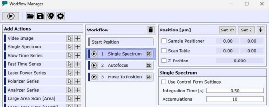
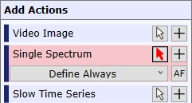
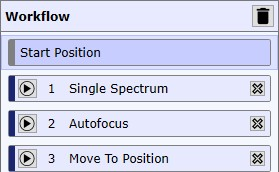
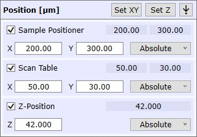
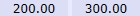
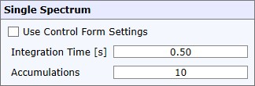

WITec工作流管理器可用于定义一系列测量和其他操作，以便在不同位置执行多个测量，每个测量都有可自定义的设置。
顶部按钮
开始 / 停止 工作流
启动或停止工作流。
进度显示在视频窗口上。

加载/保存工作流
在此处可以从硬盘加载或保存工作流。
调整位置
如果勾选，可以遍历所有定义了位置的操作并进行调整：
- 按"应用并继续"将当前位置应用到选定的工作流操作并移动到下一个操作。
- 按"返回初始位置"移动到当前操作的位置（重置更改）
选项
- 工作流运行期间保持打开：如果勾选，窗口在工作流运行期间保持打开。
添加操作

添加操作
将所需操作添加到当前工作流。
使用 监听光标机制添加操作
如果勾选，可以在任何查看器或视频窗口中点击（或根据测量类型拖动线/矩形）来在特定位置添加工作流操作：
- 始终定义：对于每个添加的操作，测量参数将由工作流管理器定义
- 定义一次：对于第一个添加的操作，测量参数将由工作流管理器定义。所有后续添加的测量将使用第一个操作的参数。
- 使用当前参数：测量使用上次相同类型测量中使用的参数（或：控制窗口中定义的参数）
- 自动对焦：如果勾选，在添加操作之前添加一个自动对焦操作。
工作流列表

显示当前工作流中的所有操作。
可以使用鼠标拖放功能对操作重新排序。
移除所有操作
从当前工作流中移除所有操作。
运行操作
启动所需操作。用于测试目的。
移除操作
从列表中移除该操作
起始位置
如果选择此元素，可以定义起始位置。当工作流基于相对位置定义时使用。
第一个定义绝对位置的工作流操作将覆盖起始位置。
设置起始位置
将当前位置（样品定位器、扫描台、显微镜Z台）设置为起始位置。
移动到起始位置
将样品定位器、扫描台和显微镜Z轴移动到起始位置。
位置参数
显示当前选定操作的位置参数。

设置XY
将样品定位器和扫描台位置参数设置为当前位置。
设置Z
将显微镜Z位置参数设置为当前位置。
移动到操作位置
将样品定位器、扫描台和显微镜Z轴移动到选定操作的中心。
样品定位器（复选框）
如果勾选，在执行操作之前将样品定位器移动到所需位置。
扫描台（复选框）
如果勾选，在执行操作之前将扫描台移动到所需位置。
Z位置（复选框）
如果勾选，在执行操作之前将显微镜Z台移动到所需位置。
请注意，仅允许当前软件限制范围内的移动。
X/Y/Z（数值编辑）
在此处可以定义所需的位置。
绝对/相对（组合框）
- 绝对：为选定的定位系统定义绝对位置。
- 相对：定义相对位置。这些值将添加到前一个操作的位置上。
运行工作流之前可以计算出最终的绝对位置。 - 相对自动对焦/TSM（仅Z位置）：定义相对位置，该位置将添加到先前执行的自动对焦或TrueSurface Mk3操作得到的Z位置上。
在运行工作流之前，绝对Z位置是未知的。

预览位置
显示选定操作的预览位置。
如果未勾选复选框或为此操作定义了相对位置，则使用前一个操作的位置来计算位置（如果没有定义绝对位置的操作，则从"起始位置"中定义的位置开始计算）。
测量参数

在此处可以定义选定工作流操作的所有测量参数。
有关所有测量参数的单独说明，请参见控制窗口。
使用控制窗口设置（复选框）
如果勾选，操作使用控制窗口中定义的当前参数（而不是工作流管理器中的参数设置）。
控制窗口保存上次测量的参数。这样，您可以为第一个操作定义一次设置，然后在所有后续相同类型的测量中勾选此复选框以重复使用相同的设置。